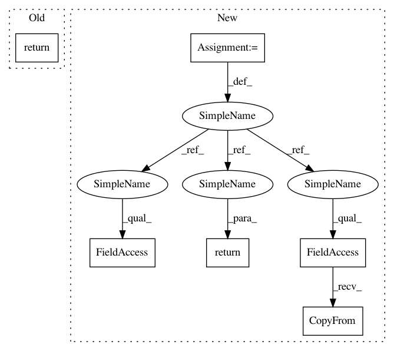

f21d53cfda625c8ffacf314db187d3ecd25255a8,src/syft/lib/python/slice.py,Slice,_object2proto,#Slice#,97
Before Change
return self.value
def _object2proto(self) -> Slice_PB:
return Slice_PB(
start=self.start,
stop=self.stop,
step=self.step,
id=serialize(obj=self._id),
)
@staticmethod
def _proto2object(proto: Slice_PB) -> "Slice":
id_: UID = deserialize(blob=proto.id)
After Change
return self.value
def _object2proto(self) -> Slice_PB:
slice_pb = Slice_PB()
if self.start:
slice_pb.start = self.start
slice_pb.has_start = True
if self.stop:
slice_pb.stop = self.stop
slice_pb.has_stop = True
if self.step:
slice_pb.step = self.step
slice_pb.has_step = True
slice_pb.id.CopyFrom(serialize(obj=self._id))
return slice_pb
@staticmethod
def _proto2object(proto: Slice_PB) -> "Slice":
id_: UID = deserialize(blob=proto.id)
In pattern: SUPERPATTERN
Frequency: 3
Non-data size: 6
Instances
Project Name: OpenMined/PySyft
Commit Name: f21d53cfda625c8ffacf314db187d3ecd25255a8
Time: 2021-03-23
Author: me@madhavajay.com
File Name: src/syft/lib/python/slice.py
Class Name: Slice
Method Name: _object2proto
Project Name: OpenMined/PySyft
Commit Name: e45fef601195a9cb850e29703015d2a062aa9ea9
Time: 2020-08-05
Author: tudorcebere@gmail.com
File Name: src/syft/core/store/storeable_object.py
Class Name: StorableObject
Method Name: _object2proto
Project Name: OpenMined/PySyft
Commit Name: a35bc3be6bc0643a49bae001967fdeb54992c49a
Time: 2020-08-12
Author: 12518480+vvmnnnkv@users.noreply.github.com
File Name: src/syft/lib/torch/uppercase_tensor.py
Class Name: TorchTensorWrapper
Method Name: _data_object2proto
Project Name: OpenMined/PySyft
Commit Name: f21d53cfda625c8ffacf314db187d3ecd25255a8
Time: 2021-03-23
Author: me@madhavajay.com
File Name: src/syft/lib/python/slice.py
Class Name: Slice
Method Name: _object2proto